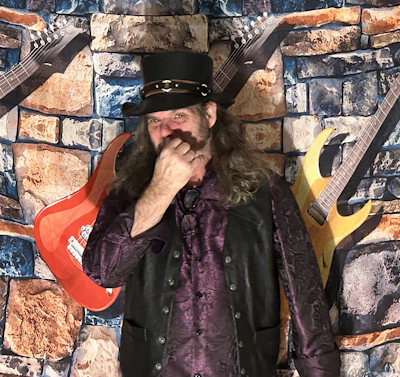
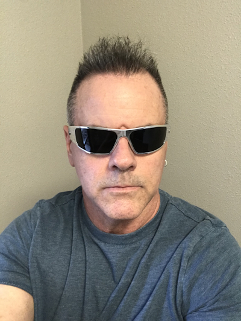

Pat "Pat By-ro-ny" - Lead Vocals & Guitar
With a vocal range that makes Axl Rose weep into his morning supermodels, Pat is the undeniable voice of Defyance.
With a stage presence so formidable that audiences have been known to spontaneously combust, Pat politely requests attention with every note he sings.
Except F#. He never hits F# on purpose.
When not fronting the band, Pat enjoys long walks on the beach, candlelit dinners, and gazing lovingly into your girlfriend's thighs eyes.

Jeff "Ricky "Not Ricky Rocket" Rock" - Drums & Backing Vocals
As Defyance's rhythm maestro, Ricky's drumming style is a unique blend of precision and chaos, much like a tornado in a watch factory. His energetic performances often leave audiences wondering if they're witnessing a musical genius or a wild animal possessed by the spirit of another, wilder animal. When not behind the drum kit, Ricky enjoys feeding perfectly healthy trees into wood chippers and attempting to stop his pet parrot from sinning, like, all the time.

Josh "Air Hammer" - Bass & Backing Vocals
Josh emerged from a decades-long slumber under a pile of Iron Maiden CDs and rotting leaves when Ricky stopped for a piss while hunting a new drum kit in Minnesota's iron range.
With bass guitar in hand and an encyclopedic knowledge of 80s metal trivia, he quickly proved to be an invaluable addition to Defyance.
When not laying down thunderous bass lines, Josh enjoys being confused by his own shadow and attempting human speech.
It's not going well.
Brett "Russian Rocket" King - Guitar
Offstage, Brett is a self-proclaimed cowboy Casanova and hopeless romantic with the patience of a frog boiling in real time. Mildly impatient, intense, and incapable of driving through a parking lot without almost grazing a pedestrian he operates somewhere between golden retriever and coke dealer. Rumors of prior cult involvement remain unverified. He overthinks movies, relationships, lyrics, and probably this sentence. There’s a non-zero chance he’s somewhere on the spectrum, so be prepared for the most awkward conversation you’ve ever experienced.
What he lacks in chill, he makes up for in sincerity. The chaos is real, but so is the loyalty. If you’re looking for a guitarist who will obsess over every detail, blow out your ears, and still somehow turn that energy into a locked-in groove and a killer solo, Brett’s your guy.
Except not. He's our guy. That means YOU, Cletus!